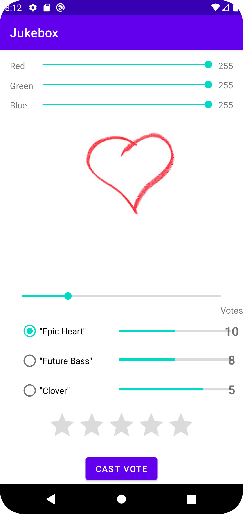
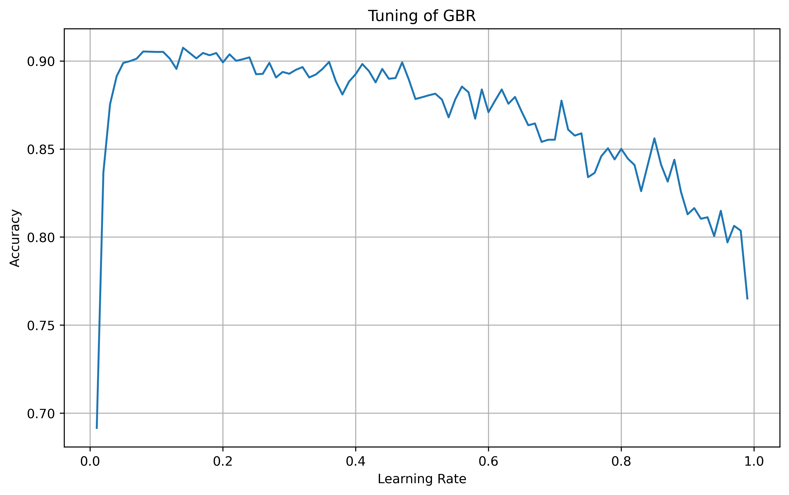
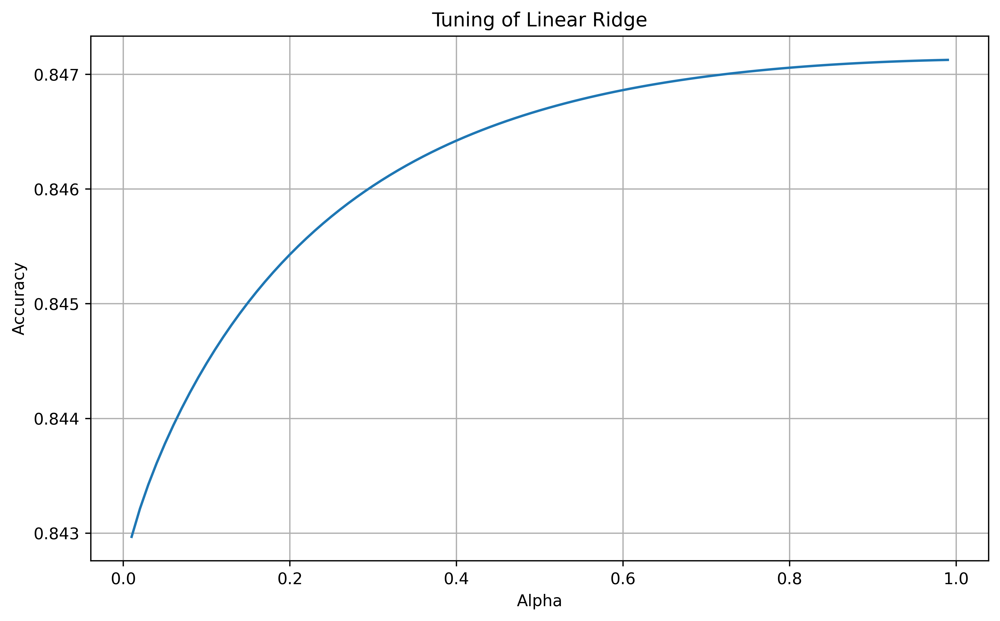
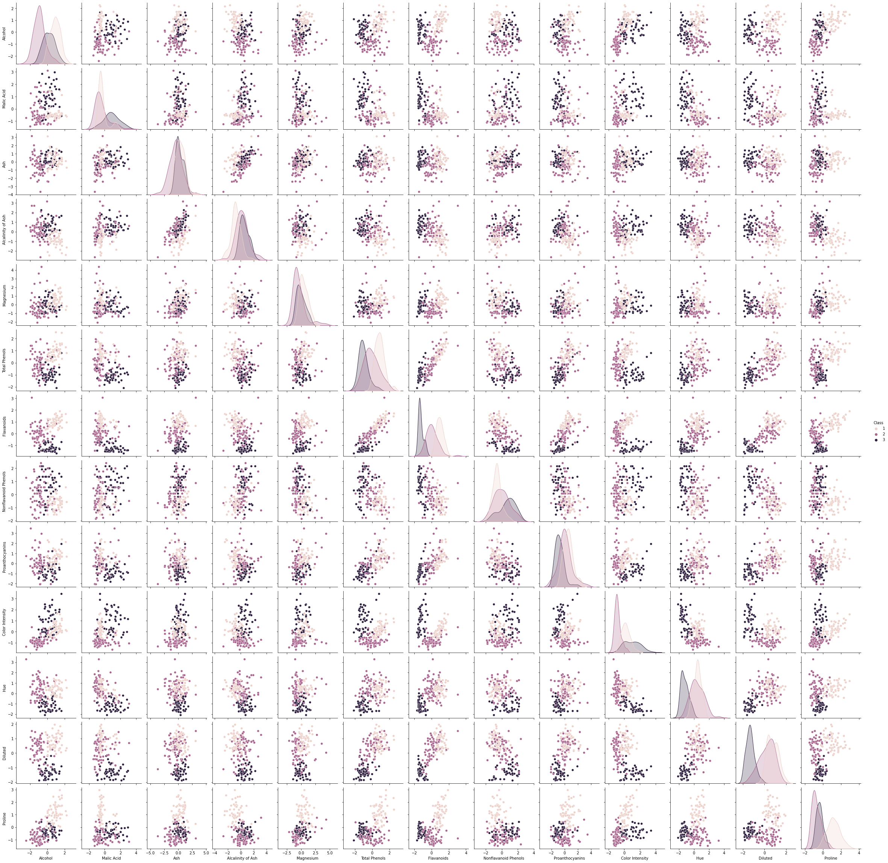
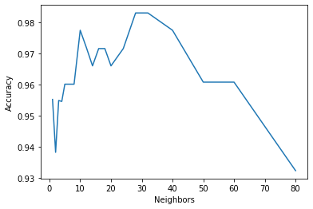
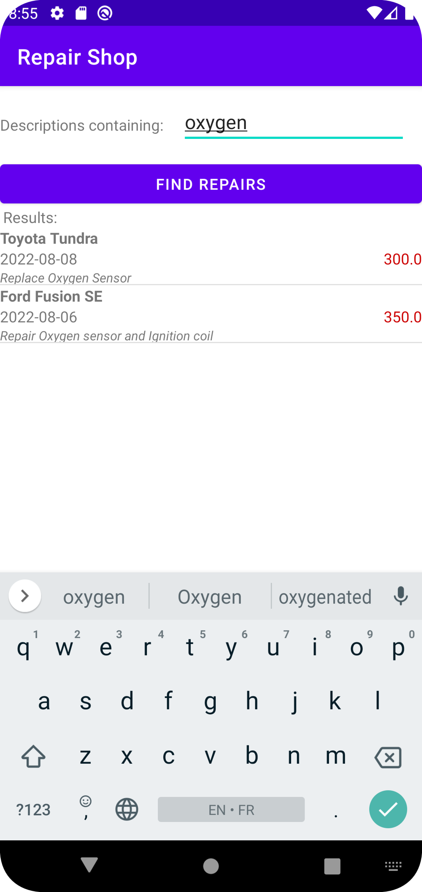
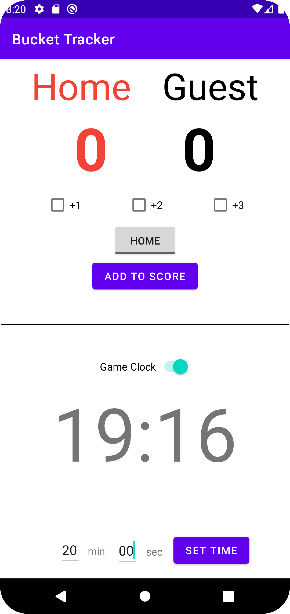
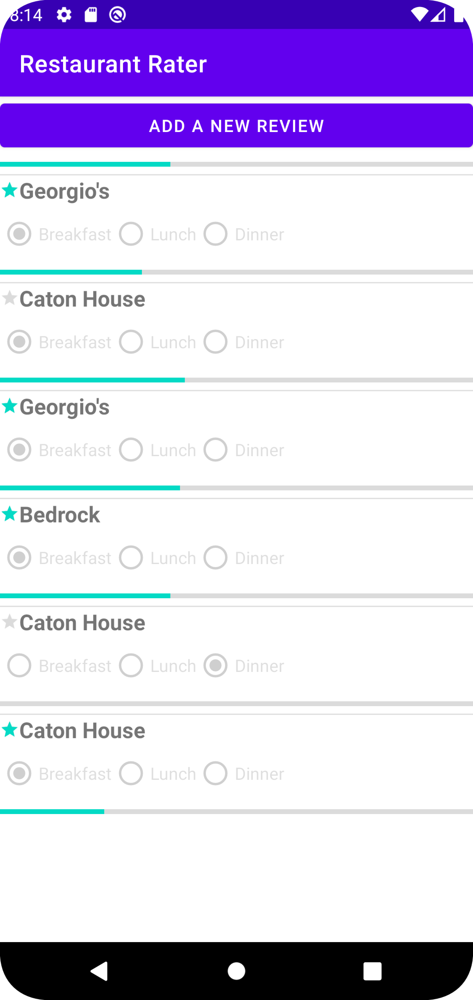

About Me
I am Pratiti Baral, an aspiring Software Engineer with a passion for Machine Learning and Web and Mobile App Development. As a
Senior Computer Science major at DePauw University, I have had the opportunity to hone my proficiency in various programming
languages including Java, Python, C++, Scala, HTML, CSS, JavaScript, and SQL. I am currently a Data Science Intern at
Fusion Education Group. I am committed to constantly improving my skills and knowledge in the field, as
demonstrated by my Data Mining and Mobile App Development projects using Python and Java on IDEs such as Spyder and
Android Studio–which are outlined in further detail below.
My Projects

Jukebox, a mobile application, that utilizes the MediaPlayer class in Android to play sound/music to be used at kiosks during public events to introduce new music to visitors.


Participated in a Data Science competition, “House Prices: Advanced Regression Techniques,” on Kaggle to predict the sale price of residential houses in Ames, Iowa based on a dataset of 79 features.


Created, evaluated, and optimized a data mining algorithm, k-NN Neighbor, as applied to a real-world Wine dataset.

Vehicle repair logging app that allows a user to keep track of the vehicles they own as well as the repairs for each vehicle.
Bucket Tracker App for NBA

A basketball-themed, score-tracking app to be used by NCAA officials for tracking points scored and time remaining on the game clock.

Restaurant Rater app that allows a user to rate restaurants that they visit and store the reviews on their device’s internal storage.